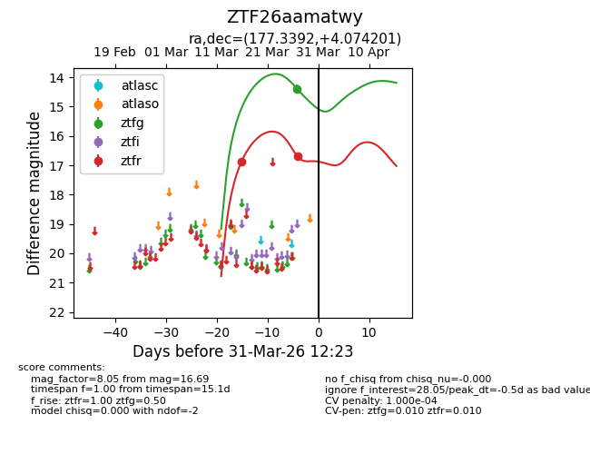
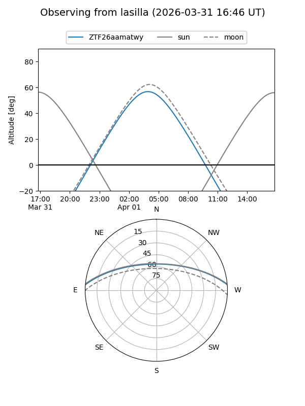
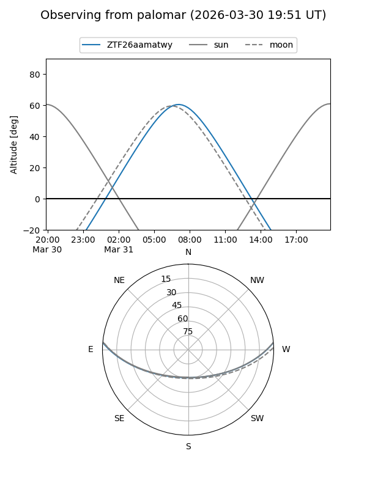
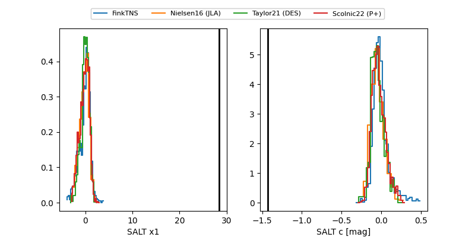

ZTF26aamatwy
Target ZTF26aamatwy at 2026-03-31 12:26
Aliases and brokers:
FINK: link
Lasair: link
ALeRCE: link
alt names
ZTF26aamatwy (ztf,fink_ztf)
Coordinates:
equatorial (ra, dec) = 177.3392,+4.07420
equatorial (HMS+DMS) = 11:49:21.41,+04:04:27.12
galactic (l, b) = (267.4919,+62.59376)
Flags:
likely cv
Photometry:
last ztfg=14.39, ztfr=16.69
1 ztfg, 2 ztfr detections
Lightcurve

Visibility


Additional plots
